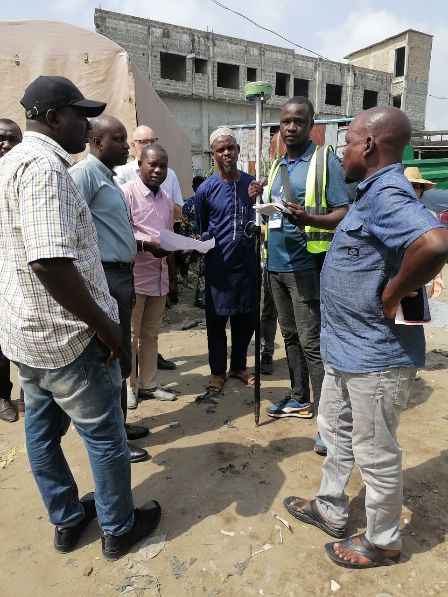

Audit Technique - Lotissements et Remembrements
Mission d'audit stratégique pour la Commune de Ouidah visant à contrôler la régularité des opérations d'aménagement foncier urbain. Cette expertise a permis d'identifier les réserves administratives, de sécuriser le patrimoine public naturel et de proposer des mécanismes innovants pour l'attribution d'actes de propriété aux collectivités locales.


Services rendus
- Contrôle exhaustif de la régularité des opérations de lotissement.
- Inventaire et dénombrement des réserves administratives créées.
- Identification du domaine public naturel et des zones protégées.
- Propositions concrètes pour l'accélération des projets d'aménagement.
Info Projet
- Commune: Ouidah
- Expertise: Audit Foncier
- Impact: Sécurisation du foncier urbain